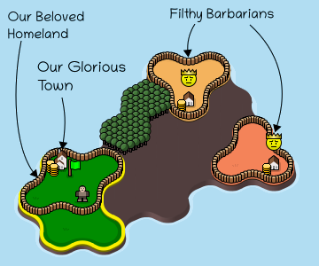
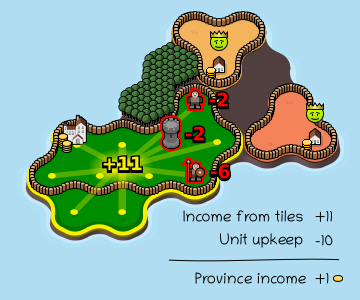
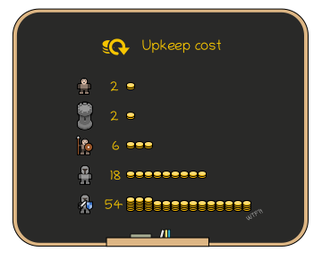
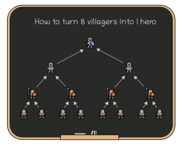
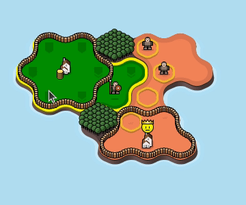
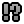
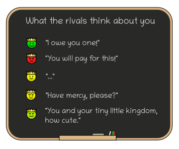

- You control the green province on the map.
- Your goal is to expand your province and destroy all rival
 towns.
towns.
- A province won't survive without a town, so make sure to protect yours!

- Each turn you gain one
 coin for each
tile in your
province.
coin for each
tile in your
province.
- But you also pay the upkeep cost for every
 unit
you own!
unit
you own!
- Surplus coins go to
 treasury in the
town. Use them to buy more units.
treasury in the
town. Use them to buy more units.

- Notice that more advanced units have a much, MUCH higher upkeep cost!
- That means buying a knight too early is an easy way to destroy your economy and promptly lose the game! Especially since there's no way to dismiss units.
- In general, stick to villagers at first to quickly expand your province. Get pikemen and knights only once you really need their hitting power!

- You can move units anywhere within your province (there's no movement range limit!) and use them to conquer tiles adjacent to the province.
- But you can't conquer tiles protected by an enemy unit of equal of greater strength! For
example a
 pikeman cannot conquer a tile
protected by another pikeman.
pikeman cannot conquer a tile
protected by another pikeman.
- Every unit protects adjacent tiles of the same color. Use that to prevent the enemy from invading your province!
- Towns have the same strength as a villager and
 castles
have the same strength as pikemen.
castles
have the same strength as pikemen.
 Heroes are an exception, they can attack
each other!
Heroes are an exception, they can attack
each other!

- Moving two units of the same type on top of each other will merge them into the next stronger unit.
- Merging your villagers is usually the fastest way to get a pikeman or a
 knight!
knight!

- Units that lost access to town are marked as 
stranded and become
 bandits
next turn.
This is irreversible, so make sure not to leave your units open to be cut off like that!
bandits
next turn.
This is irreversible, so make sure not to leave your units open to be cut off like that!
- Bandits serve only themselves. They move randomly around the map and steal income from any tiles they land on.
- The stolen coins are taken to a nearby
 Bandit
camp. These camps can spawn new bandits once there are at least 3
Bandit
camp. These camps can spawn new bandits once there are at least 3  coins
stored.
coins
stored.

- When a province doesn't have enough coins left to pay the upkeep of its units, ALL units in the province will rebel and become bandits!
- This is a huge disaster when you let it happen to you, and an utterly crushing blow if you can use it against your rivals!

- In Konkr, your opponents play a lot like real humans:
- They always play to win, don't expect them to settle for second place!
- They are vindictive and eager to retaliate, so think twice before provoking them.
- They join forces against a dominant player (on hard difficulty, that means even against you!).
- The emoji over enemy towns tells you how the rival thinks about you.
- But remember, there are no permanent alliances and every rival looks after their own interests first, no matter how much they like you!

In Konkr even small mistakes are often fatal, which is why you are given a few extra tools to help you out:
- Until you finish your turn, you can freely undo any moves you made. Feel free to experiment!
- Three times per level, you can use rewind to go back further than that, even multiple turns!
- You can also view replay to get a better understanding of what the heck just happened to your province during the rivals turn.
Long story short:
- Keep an eye on your coin income.
- Don't waste coins on expensive units until it's truly worth it.
- Don't forget that you can merge two units to get a stronger one!
- Strike at the rival province, not the defending units. Go around the enemy defenders and cut them off from their town or ruin their economy to trigger a rebellion.
- Before hitting the end turn button, think about what your rivals might do next and defend your weakspots.
- Don't antagonize everyone. Chose carefully who to fight and who to leave alone.
- Learn from your rivals! Remember that every dirty trick they use against you can also be used against them!
The rules of Konkr are quite simple, but it takes a while to get used to them! Learn, adapt and prevail!